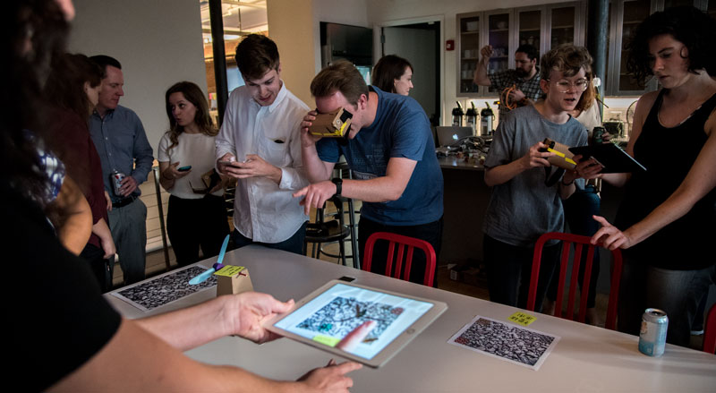
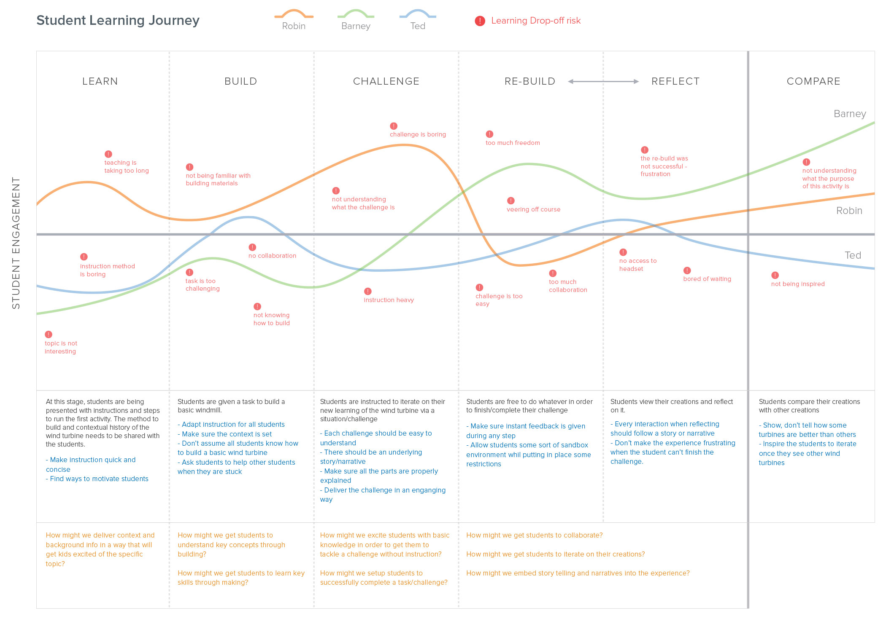
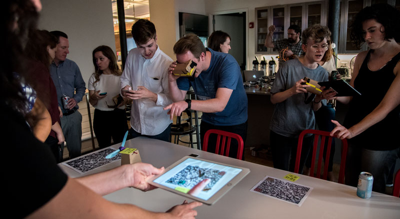
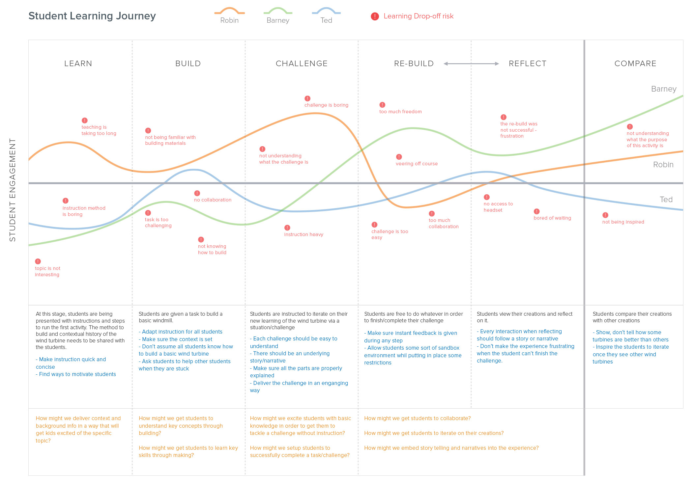

Prompt
Every summer, Moment hires 4 interns to tackle an interesting technology problem. For the 2016 summer interns, we were challenged to find a different use for AR/VR beyond the entertainment industry.
For this project, we focused on education and how we might help students learn complex and invisible concepts more easily using this technology.
Problem
Traditional education has a difficult time engaging students when it comes to learning complex, invisible, and abstract science concepts.
A lot of complex concepts in school like physics and science are taught with two-dimensional mediums like textbooks. This creates a disconnect between reality and the learning material/goals.
Approach
As a team, we interviewed maker educators to understand how children learn more quickly and digest information. What we learned was that maker education helps develop soft skills in which traditional education cannot.
Key Insights: Collaboration encourages failure and iteration. The greatest learning comes from the process and not the final product. Relate learning concepts to real world examples.
The Idea: Peer
Peer is a mixed reality educational platform that engages students by making abstract and complex forces visible and tangible.
Peer uses a real life scenario like building wind turbines for energy collection with the combination of Mixed Reality to depict invisible aerodynamic concepts for better learning. See the video below for a more detialed explanation.
Storyboard
In order to build Peer, we drafted out this sample storyboard of the aerodynamics lesson. PDF
Press
Peer was the recipient of the IxDA Interaction Award (Best in Engaging), 2017 AIGA (Re)Design Awards, and also a honorable mention for the Fast Company Innovation by Design Awards. More details here
 


